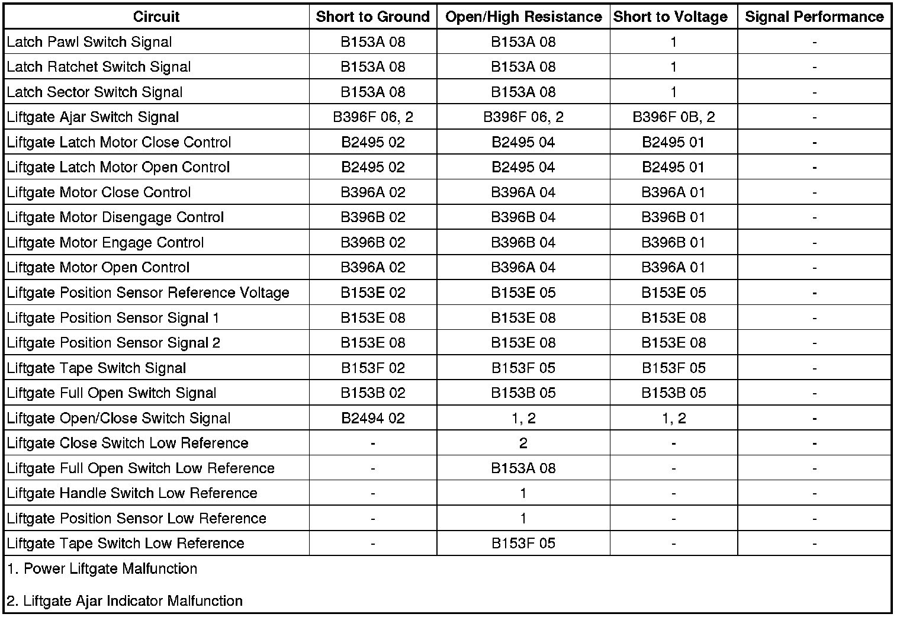

Liftgate Ajar Indicator Malfunction
Liftgate Ajar Indicator Malfunction
Diagnostic Instructions
* Perform the Diagnostic System Check - Vehicle (Initial Inspection and Diagnostic Overview) prior to using this diagnostic procedure.
* Review Strategy Based Diagnosis (Initial Inspection and Diagnostic Overview) for an overview of the diagnostic approach.
* Diagnostic Procedure Instructions (Initial Inspection and Diagnostic Overview) provides an overview of each diagnostic category.
Diagnostic Fault Information

Circuit/System Description
The power liftgate module (PLM) controls operation of the liftgate latch motor and the liftgate actuator assembly. Under normal conditions the power latch can only be unlatched under power from the PLM through an input from the liftgate handle switch or the remote keyless entry (RKE) transmitter, but the liftgate may be manually closed to the primary latched position without the PLM performing the power latch function. The liftgate actuator assembly consists of an actuator drive motor that contains 2 internal hall effect sensors. The drive motor is mated to a gear that is connected to an actuator clutch. When the clutch is engaged the motor rotation is transferred to the clutch gear, intermediate gear, and actuator arm gear. The full open switch is a limit switch mounted on the liftgate actuator assembly along side the actuator arm gear, and will make contact with the cam on the actuator arm gear when the liftgate is near the full open position. The PLM continuously monitors the liftgate location and direction of travel using the 2 hall effect sensors located in the drive motor assembly. The sensors are used to determine when the liftgate has reached the full open and full closed points of travel where the actuator clutch should be disengaged. These positions may vary slightly and must be learned when most liftgate components are serviced.
The driver information center (DIC) located on the instrument panel cluster (IPC), illuminates the LIFT GATE AJAR indicator when the power lift gate module (PLM) detects the liftgate latch ajar switch is closed to ground indicating the liftgate is open. The IPC receives a GMLAN serial data message from the PLM indicating the liftgate ajar status. If this message is displayed and the vehicle speed is greater than 4.8 km/h (3 mph), a chime will sound.
Reference Information
Schematic Reference
Liftgate Schematics (Liftgate Schematics)
Connector End View Reference
Component Connector End Views (Connector Views)
Description and Operation
Liftgate Description and Operation (Description and Operation)
Electrical Information Reference
* Circuit Testing (Component Tests and General Diagnostics)
* Connector Repairs (Component Tests and General Diagnostics)
* Testing for Intermittent Conditions and Poor Connections (Component Tests and General Diagnostics)
* Wiring Repairs (Component Tests and General Diagnostics)
Scan Tool Reference
Control Module References (Programming and Relearning)
Circuit/System Verification
Ignition ON, observe the scan tool liftgate ajar switch parameter while opening and closing the liftgate. The reading should toggle between ACTIVE and INACTIVE.
Circuit/System Testing
1. Ignition ON, liftgate OPEN, observe the scan tool liftgate ajar switch parameter. The scan tool should display ACTIVE and the LIFT GATE AJAR indicator should be ON.
• If the scan tool displays ACTIVE and the LIFT GATE AJAR indicator is not ON, replace the IPC.
2. Ignition ON, liftgate CLOSED, observe the scan tool liftgate ajar switch parameter. The scan tool should display INACTIVE and the LIFT GATE AJAR indicator should be OFF.
• If the scan tool displays INACTIVE and the LIFT GATE AJAR indicator is ON, replace the IPC.
3. Ignition OFF, disconnect the harness connector at the liftgate latch assembly.
4. Ignition OFF, test for less than 5.0 ohms of resistance between the low reference circuit terminal 2 and ground.
• If greater than the specified range, test the low reference circuit for an open/high resistance. If the circuit tests normal, replace the PLM.
5. Ignition ON, verify the scan tool liftgate ajar switch parameter is INACTIVE.
• If not the specified value, test the signal circuit terminal 6 for a short to ground. If the circuits test normal, replace the PLM.
6. Install a 3-amp fused jumper wire between the signal circuit terminal 6 and ground. Verify the scan tool liftgate ajar switch parameter is ACTIVE.
• If not the specified value, test the signal circuit for a short to voltage or an open/high resistance. If the circuits test normal, replace the PLM.
7. If all circuits test normal, test or replace the liftgate latch assembly.
Repair Instructions
Perform the Diagnostic Repair Verification (Verification Tests) after completing the diagnostic procedure.
Control Module References (Programming and Relearning) for PLM replacement, setup, and programming